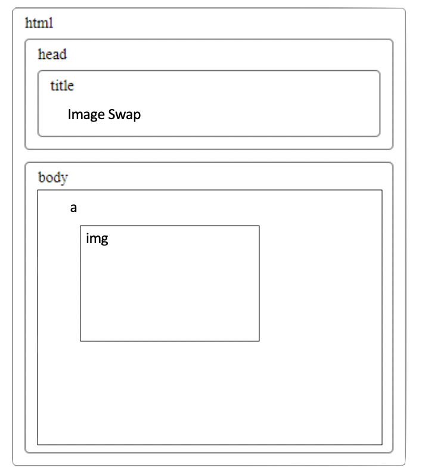
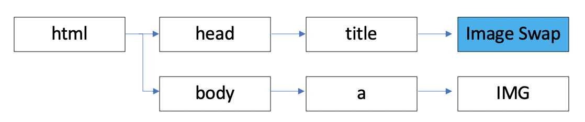

<Objectives/>
Making an Accessible Website
Introductory JavaScript
Introductory JavaScript II
<Summary/>
Making an Accessible Website
When creating a webpage, the designer must take into account who will use this page, the audience may apply to young, old, and people with disabilites, therefore accessibility features must be incorporated to assist anyone in using the page. For example: someone with color blindness may find the initial design diffucult to follow. With the incorporation of an accessibility feature that could alter the appearance of the design, to allow them to see the page better. The first task was to return back to the practical_0 page and modify to meet accessibility requirements.
Tables
Within the table element a summary and scope attributes were added. The summary element adds a textual description of the table and the scope attribute acts as a table heading for rows and colums.
Images
Image elements were given an alt attribute to give a description of the image if necessary. If the image is only for decoration the alt attribute is left blank. alt = ""
Text Entry
Text entry placeholders require an id to uniquely identify each placeholder. The label potrays to the user on screen what each placeholder is and with the required element, it shows the users what pattern must be followed, adding a sense of validation.
Radio Button & Check Boxes
Radio buttons and check boxes follow the same protocol as text entry placeholders. Except when adding a label to a placeholder the tag must be placed before the input page. In contrast with radio buttons and check boxes the label tag must be placed after the input tag.
Ensure CSS and XHTML standards
The final task was to verify the CSS and HTML being used within the learning_log. CSS and HTML needs to adhere to a standard to ensure that it can be understood by all web clients that may encounter it. With the assistance of the W3C group they offer a validator hosted online at the w3 CSS and HTML validators. Once uploaded the validator will generate a list of errors, warnings and valid CSS information.
Since all HTML and CSS has passed the following image can be included:

After modifying practical_0, I applied the same rules to the learning log. Every page so far has passed under the HTML and CSS validators meeting the accessibility requirements. Each image has been either given a descriptive alt attribute or left blank if necessary.
Introductory JavaScript
This task was required to copy code from the practical PDF, create a HTML document and download two images of choice, renaming them 'IMAGE_0' & 'IMAGE_1'. With the incorporation of javascript, this task showed how two images swap with the mouse cursor hovering over the selected area. Something like the following:
The next step was creating the DOM (Document Object Model) structure for this HTML document. This Document Object Model is an internal projection of objects held on a web page.
Figure 3 & 4


Introductory JavaScript II
Within task 1 along side the image element, the next task was to add three rollover links, allowing users to change the background color of those shown. A rollover link is by which the user's mouse pointer is moved onto an element, allowing an event to occur. In this case the event is altering background's appearance using the onMouseOver attribute held within the <a/> tag. The three colors to be used within these rollover links are yellow, red and green. Due to rollover link 1 needing to use a valid named color and rollover link 2 a RGB specified colour, the final color would be in Hex using the hastag key. I added an extra rollover link allowing the user to return to the original background color.
Figure 5| Color | Appearance | Valid Name | RGB | Hex |
|---|---|---|---|---|
| Yellow | "yellow" | (255,255,0) | #FFFF00 | |
| Red | "red" | (255, 1, 0) | #FF0000 | |
| Green | "green" | (0,128,0) | #008000 | |
| White | "white" | (255,255,255) | #FFFFFF |